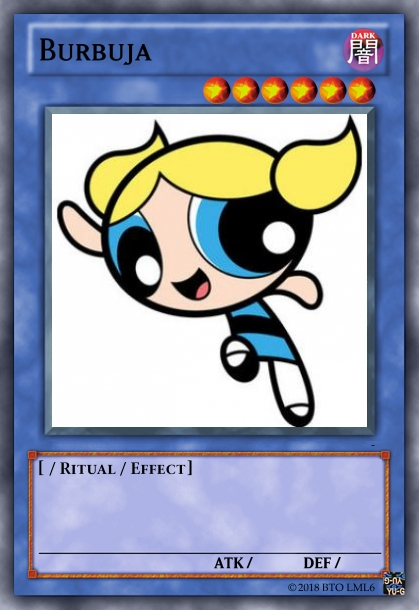
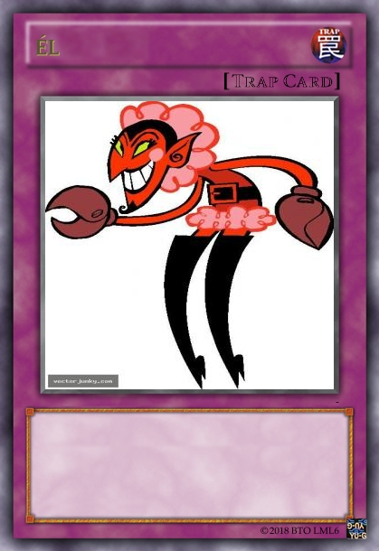

La serie comienza con uno de los experimentos del profesor Utonio, tratando de crear la niñita perfecta, ya que se sentía muy solo en su casa. Azúcar, especias y muchas cosas bonitas son los ingredientes elegidos para crear a esta niña, pero debido a un accidente causado por un mono normal llamado Mojo, se agrega un ingrediente más a la fórmula del profesor: "La Sustancia X", lo cual produce una explosión y da como resultado la creación de tres niñas con poderes especiales, Bombón, Burbuja y Bellota. Las mismas desarrollan superpoderes que las han hecho consagrar su vida para luchar contra el crimen y las fuerzas del mal.

